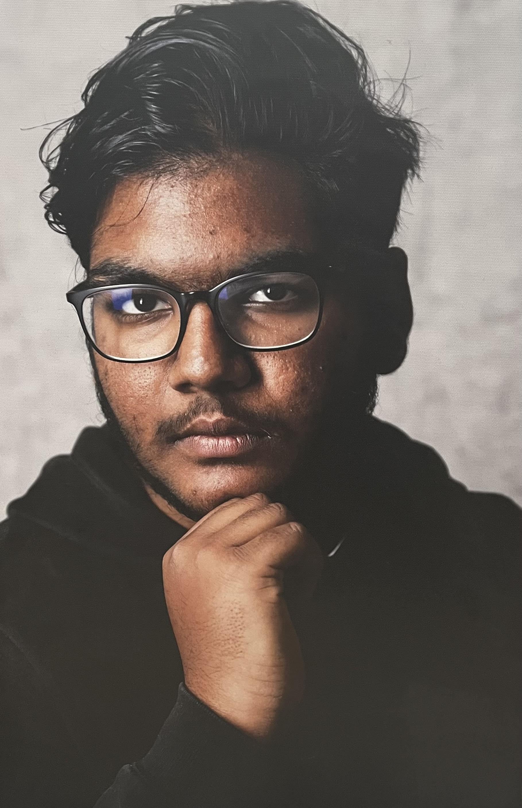

Over Mij

Hoi ik ben Zane Abdoelgafoer en ik ben 16 jaar oud, ik studeer aan het Emmauscollege en zit in 4HAVO.
Ik ben zelf drummer en heb er daarom voor gekozen om deze website te maken.
Ik drum al voor ongeveer 8 jaar lang en heb al veel technieken geleerd door de jaren heen.
Mijn liefde voor muziek kan ik niet beschrijven. Ik kan naar elk soort lied luisteren, maar waar ik echt blij van word zijn de wat oudere artiesten zoals Michael Jackson en Lionel Richie, maar er zijn ook veel artiesten van de nieuwe garde waar ik graag naaar luister zoals Bruno Mars, Justin Timberlake en The Weeknd. Mijn genre vind ik zelf niet echt te omschrijven ik luister naar alles wat ik goed vind klinken.